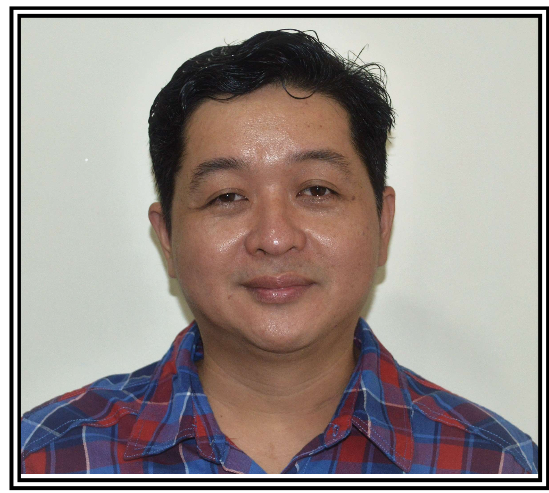

Mark Anthony A. Alonzo
mackalonzo@gmail.com
349 Tagapo, Santa Rosa City, Laguna
0945 824 1107
Career Objective
To leverage my skills in a dynamic company, where i can contribute my procurement
and fleet management experience to drive company goals, while continously expanding
my knowledge ans skills in the industry ultimately advancing both my professional growth
and the success of the company.
Summary of Qualifications
Working experience in procurement, fleet management, document control, and pc support. Adventurous,
resourceful, patient in one package.
Work Experience
Fleet Operations Management, Philkor Dynamics Solution and Sourcing Industry, Inc. - City of Santa Rosa, Laguna
from January 2016 to April 2022
- Manages vehicle fleet daily dispatching operations.
- Receives trip tickets from clients as request for a vehicle.
- Creates service schedule for vehicle units
- Creation of daily trip summary for client's reference of unit trip details for the next day.
- Preperation of weekly billing
- Handles client's inquiries and reques.
Owner/Manager, Healing Nirvana Spa - San Pedro, Laguna April 2015 to September 2018
- Manages day to day spa operations.
- Creates marketing & promotional materials for spa operations.
- Handles employee's salaries, compensations & benefits.
Admin & Purchasing Officer, Typical Construction & Trading Corp. - City of Santa Rosa, Laguna from
March 2014 to April 2015
- Evaluate purchase requisition and recommend mateial options based on availabilty, lead time & specs.
- Prepare project & materials purchase requirements to be sent out to constractos & suppliers.
- Conducts bidding process for the selection of suppliers & contractors for large amount contracts.
- Sourcing of contractos & suppliers for mechanical and electrical works.
- Pre-qualification of contractors & suppiers
- Prepare invitations to qualified suppliers and contractos for a bid conference.
- Evaluation of bids by point system
- Presentation of bids and comnparison to the general manager for final approval.
- Preperation of notice of failed bids to losing suppliers and contractors.
- Negotiate with the winning suppliers/contractors for the final amount to maximize cost savingss.
- Execution of notice to proceed to winning supplier/contractor.
- Prepare & update material schedule for lead time, delivery & others.
Document Controller/Project Admin - Shinryo Phils. Co. Inc. - Makati City from April 2006 to April 2011
- In-Charge of a complete filing system from implementation to archiving at the main office.
- Coordination with clients, project managers, consultants and contractors for documentation related issues.
- Control of for-construction, shop, commennted, approved and as-built drawings for revisions, submission & for reference of project staff
- Preparation of evaluation of material and equipment request for purchase & coordination with suppliers for conformity to specs.
- Monitoring of material & equipment submission & delivery status.
- Creation, coordination & submission of additional works quotation as instructed by project manager.
- Administration and office management at project site.
- Revolving fund management.
- Maintenance and repair of project computers and LAN.
- Preparation, compiling & submission of as-built drawings and handover documents in the exact specfications as agreed upon in the contract.
Legal Assistant, F. Alonzo & Associates - Calamba City from June 2004 to January 2006
- Manage all administrative task for attorneys.
- Compose and revise legal documents for attorneys, including letters and legal filings.
- Answer direct attorney phone lines and act as a liaison between clients and attorneys.
- Schedule all appointments and briefings for attorneys, as well as tract and maintain busy attorney schedules.
- Ensure legal documents are processed and handled in a timely and efficient manner in order to comply with approriate regulations and deadlines.
- Maintain office computers and printers.
- File and archive all documents in compliance with existing laws.
Clerk, Isuzu Motors, Phils. Inc. - Laguna Technopark from November 2003 to April 2004
- Responsible for the processing of new vehicle report for registration to LTO.
- Daily update of new vehicle database
- Handle inquiries from car dealers regarding registration status.
Games Cashier, Enchanted Kingdom, Inc. City of Santa Rosa, Laguna from March 2002 to November 2002
- Responsible for daily cashiering of assigned post at games stand.
Education
Bachelor of Science in Computer Science
University of Perpetual Help - Laguna
Date Completed - April 2002